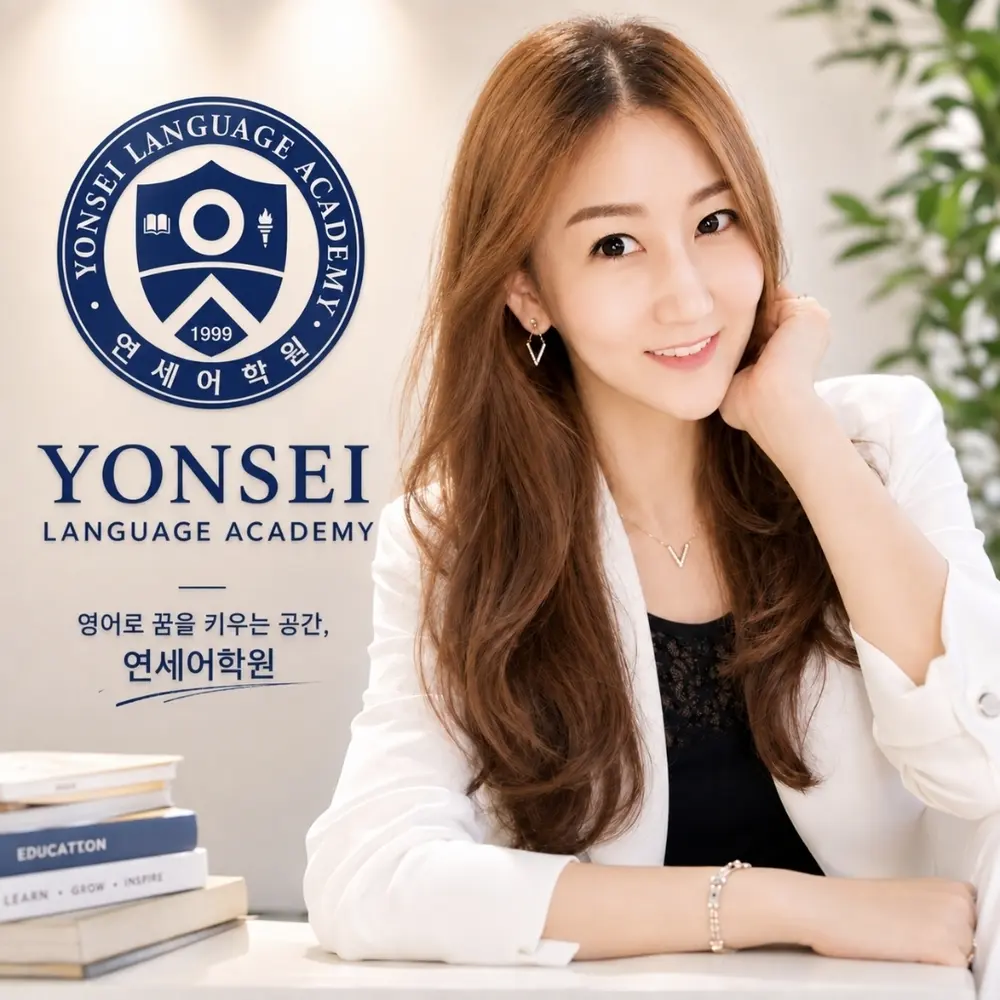
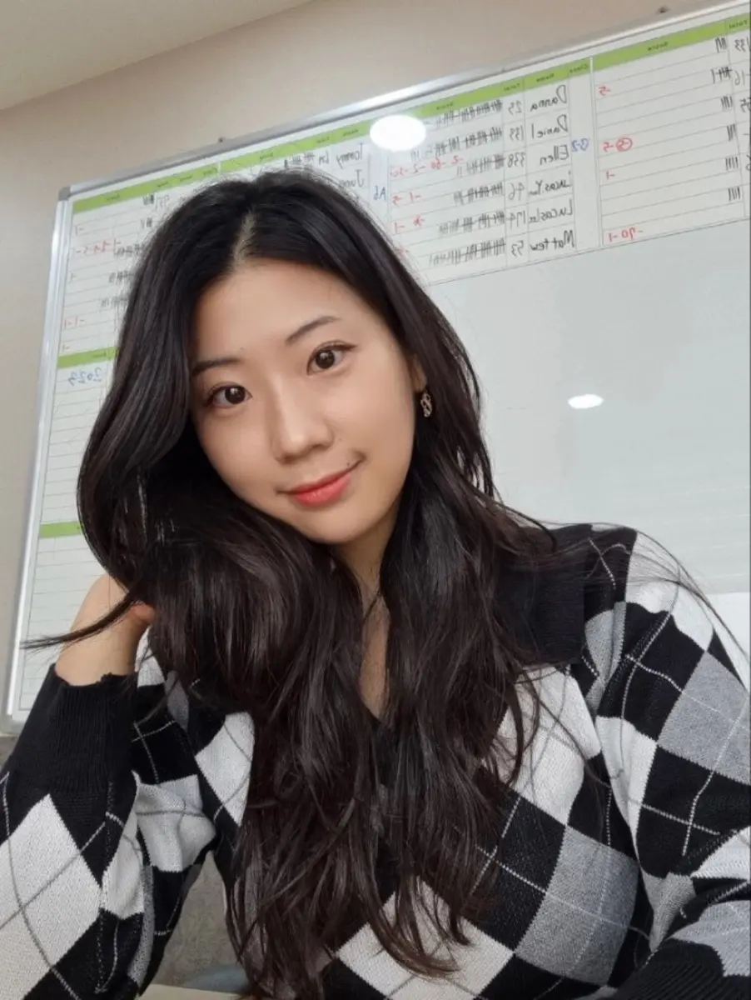
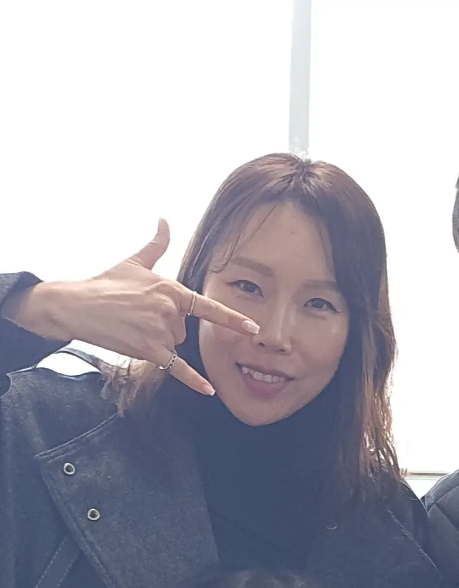
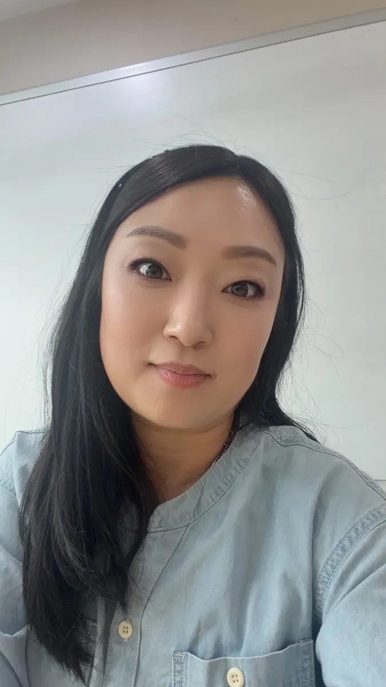
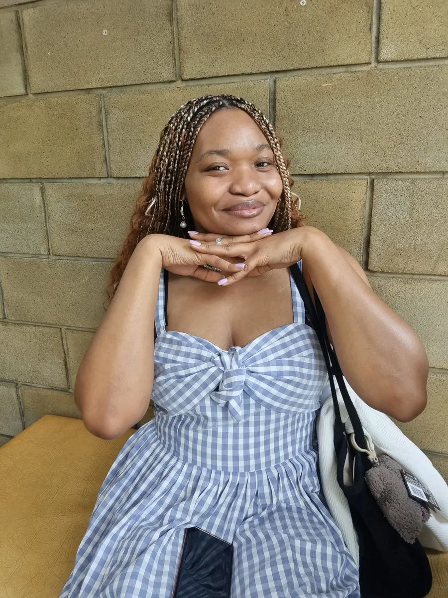

6명 정원 소수수업
모든 학생이 충분히 말하고 질문하며 수업의 주인공이 됩니다.
ABOUT YONSEI
연세어학원은 1999년 설립 이래, 아이들이 영어를 머리로만 이해하지 않고 입으로 익히며 자신 있게 표현하도록 지도해 왔습니다.
회화와 읽기의 기본기가 자리 잡으면 문법과 쓰기로 자연스럽게 확장하고, 중·고등 과정에서는 학교별 내신과 시험 실력까지 연결합니다.
WHY YONSEI
작은 반에서 더 많이 말하고, 꼼꼼한 관리로 끝까지 성장합니다.
모든 학생이 충분히 말하고 질문하며 수업의 주인공이 됩니다.
회화·읽기·쓰기·문법을 단계별로 연결해 균형 있게 가르칩니다.
학생별 수준과 학습 속도를 살피고 부족한 부분을 세심하게 채웁니다.
교과서·문법·서술형·수행평가까지 학교 시험에 맞춰 준비합니다.
PROGRAMS
영어와 친해지는 첫 순간부터 입시를 준비하는 시기까지, 흔들림 없이 이어지는 학습 흐름을 만듭니다.
KINDER · LOWER ELEMENTARY
파닉스와 기초 회화, 리딩을 놀이와 활동으로 즐겁게 익힙니다.
UPPER ELEMENTARY
읽기·문법·쓰기를 연결하고 발표를 통해 생각을 영어로 표현합니다.
MIDDLE SCHOOL
교과서 분석부터 서술형·수행평가까지 학교별 내신을 관리합니다.
HIGH SCHOOL
내신과 수능형 독해·어휘·문법을 함께 다져 실전력을 높입니다.
MEET OUR TEACHERS
대표원장과 모든 선생님이 따뜻한 격려와 전문적인 수업으로 영어 실력과 자신감을 함께 키웁니다.

DIRECTOR

ELEMENTARY · MIDDLE
ELEMENTARY

ELEMENTARY

ELEMENTARY · MIDDLE
NATIVE TEACHER

NATIVE TEACHER

BILINGUAL TEACHER
SAFE SCHOOL BUS
정자동 중심상가 인근 학교와 아파트의 연세어학원 노선입니다.
VISIT YONSEI
영어로 꿈을 키우는 공간
YONSEI